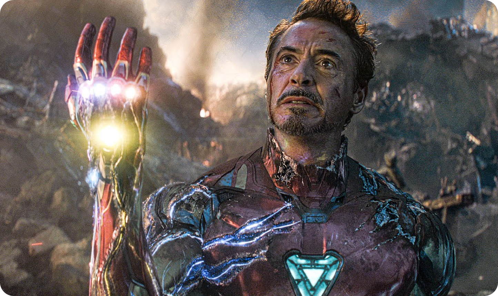

Recent heroic acts
Why did Iron Man have to die? His sacrifice was a key part of saving the universe in Avengers: Endgame, and the universe may have had no other choice - Iron Man mav have been the real threat all lalong. Robert Downey Jr.'s genius billionaire playboy philanthropist was the face of the Marvel Cinematic Universe for over a decade. Iron Man launched the MCU back in 2008 and played a pivotal role in what is now known as the Infinity Saga. He proved to be one of the MCU franchise's greatest heroes and put his life on the line multiple times before paying the ultimate price in Avengers: Endgame
